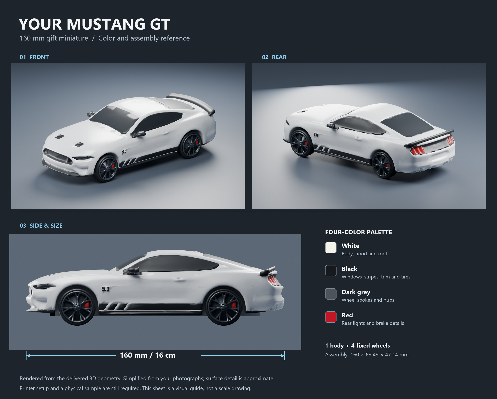

160 MM MUSTANG GT · PERSONAL GIFT
Your car, made miniature.
The model files and color reference are prepared. The college technician must choose the real printer profile, check the slice and run a small sample before the full print.

Take this whole folder to college
- Open the print and assembly guide with the technician.
- If the printer supports multiple colors, use the multicolor parts and import instructions. Keep each physical object’s colored parts aligned together and assign the matching filament colors in the slicer.
- If it supports one color, use the body STL and the four labeled wheel STLs in print/. Print in white and paint to match the color sheet.
- Print the detail sample and one wheel at full scale. Then print one body and four wheels, finish and glue.
Printer model, material and color capability are unconfirmed. These files are models for the slicer; no machine-ready G-code is included. Standard STL files do not contain colors.
Body adapted from “Ford Mustang GT 2018” by SadPepe, Thingiverse 3192801, CC BY-NC 4.0. Wheels independently generated. See attribution and source notes. This is a simplified photo-inspired miniature, not a measured replica.